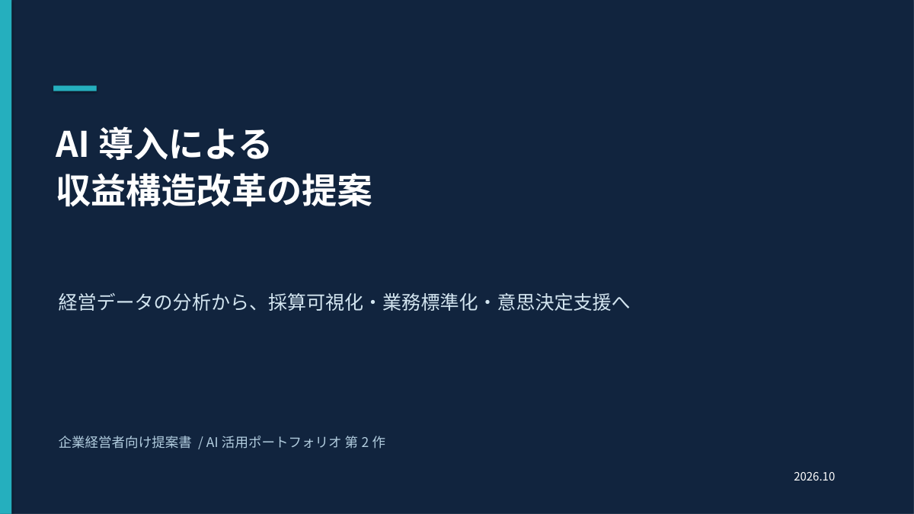
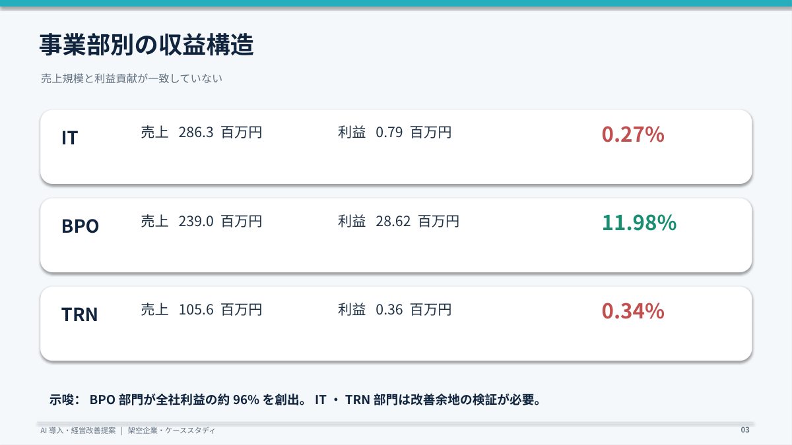
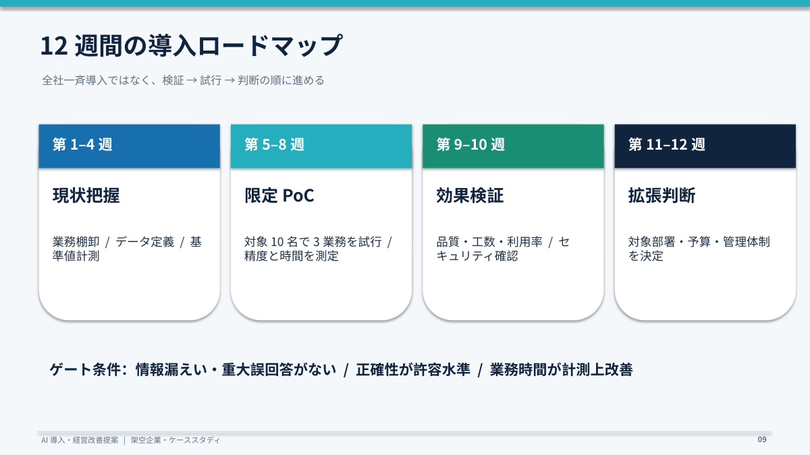
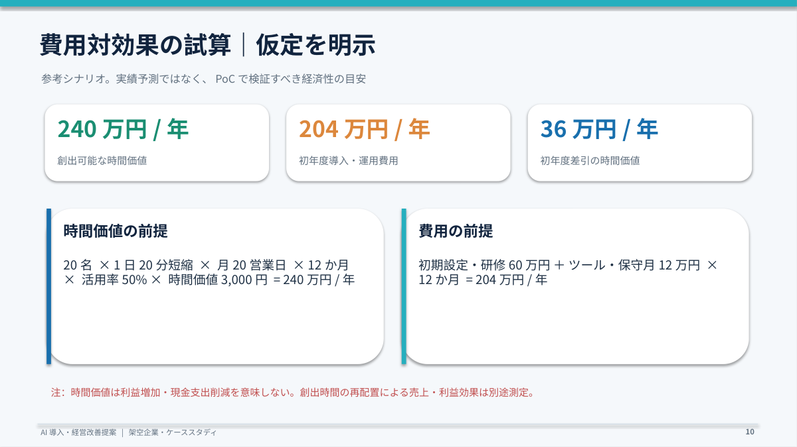

案件別採算を可視化
対象：利益率の低いIT・TRN部門。案件別売上、見積・実績工数、外注費、粗利を集めて原因を確認します。
AIの役割：差異の大きな案件や原因候補を要約。価格・契約・体制の判断は責任者が行います。
KPI：案件別粗利率、工数差、赤字案件比率。
第1作の架空企業分析を出発点に、低利益率の課題仮説と検証方法、AIを使うべき業務、12週間の限定PoC、経営判断の基準を12スライドの提案書にまとめました。
架空企業NBS-50の売上6.31億円に対し、IT部門の利益率は約0.27%、TRN部門は約0.34%。一方でBPO部門が全社利益の約96%を占める状態を出発点にしました。
重要なのは「AIの導入数」ではなく、案件の採算性と経営判断のスピードを継続的に改善すること。原因の断定を避け、追加データの取得と測定を提案しています。

対象：利益率の低いIT・TRN部門。案件別売上、見積・実績工数、外注費、粗利を集めて原因を確認します。
AIの役割：差異の大きな案件や原因候補を要約。価格・契約・体制の判断は責任者が行います。
KPI：案件別粗利率、工数差、赤字案件比率。
見積・提案の草案、議事録と日報の整理、承認済みマニュアルの検索を支援します。
AIの役割：ドラフト・整理・検索補助。機密情報を管理し、人によるレビューを必須にします。
KPI：作業時間、修正回数、正確性。
第1作のExcelと統一したデータ定義を利用し、予実差異と重点案件を月次で把握します。
AIの役割：異常値の説明・会議用コメントの草案。担当者と期限、翌月の結果は人が確認します。
KPI：レポート作成日数、対策決定までの日数。
業務棚卸、データ定義、基準時間・品質の計測。
10名を対象に3業務を試行。精度と時間を計測。
品質、削減工数、利用率、情報管理を検証。
評価結果に基づき拡大・改善・中止を決定。


240万円 ／年の創出可能な時間価値
204万円 ／初年度の導入・運用費用
36万円 ／初年度の差引時間価値
20名 × 1日20分短縮 × 月20営業日 × 12か月 × 活用率50% × 時間価値3,000円／時。費用は初期60万円＋月12万円×12か月。10名のPoCから20名へ拡張した場合の仮想シナリオであり、確定値ではありません。

ChatGPTを用いて構成、仮説、施策案、試算、12スライドの文章・デザインの草案を作成。
経営課題に対する改善案を重視し、原因仮説 → 検証 → 対応策 → AIの役割 → 効果測定の順に設計。
経営会議での承認、10名の試行、品質・削減工数の測定、実地導入は実施していません。